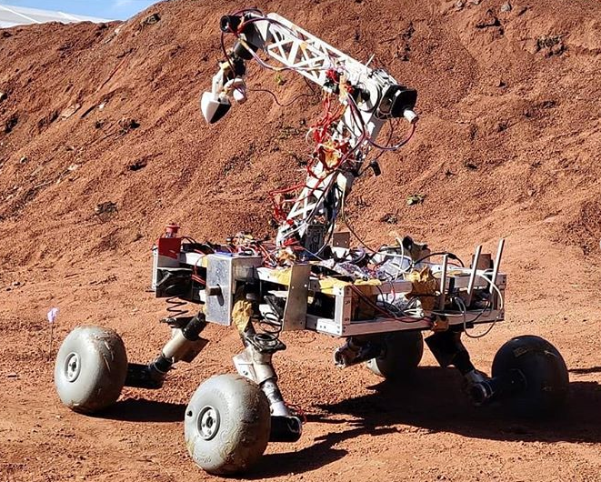
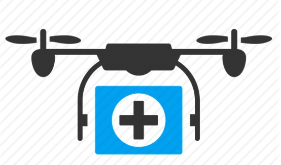
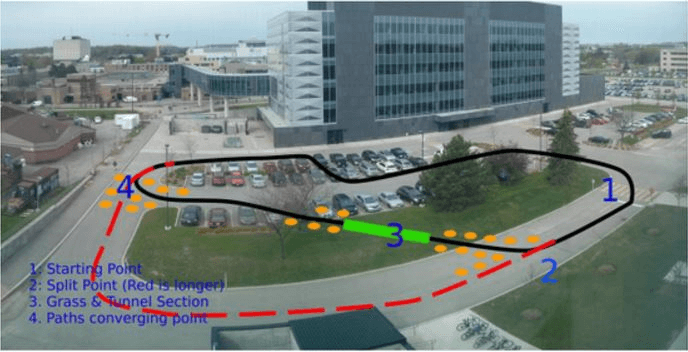
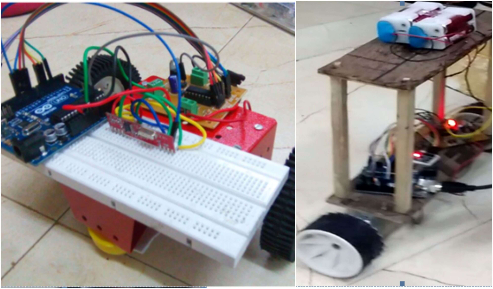
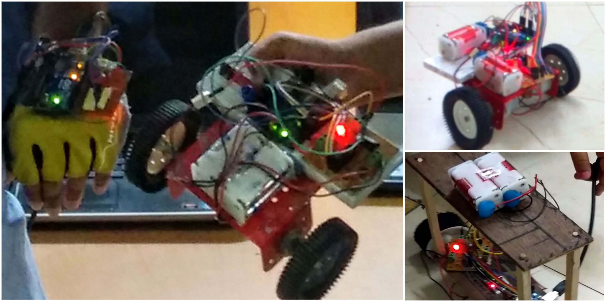
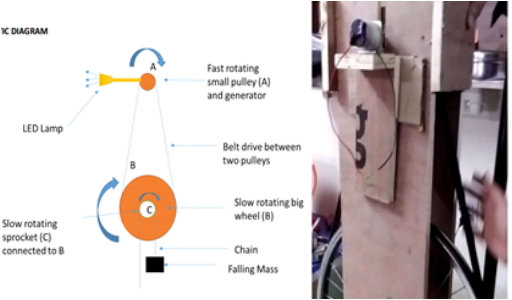
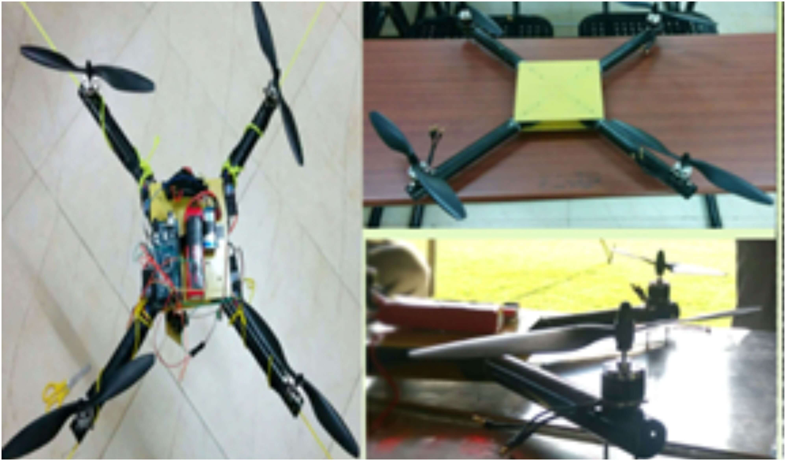
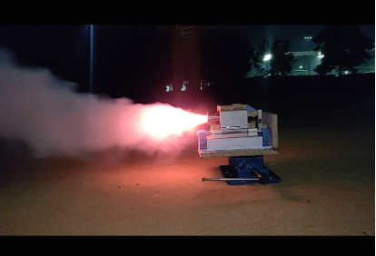
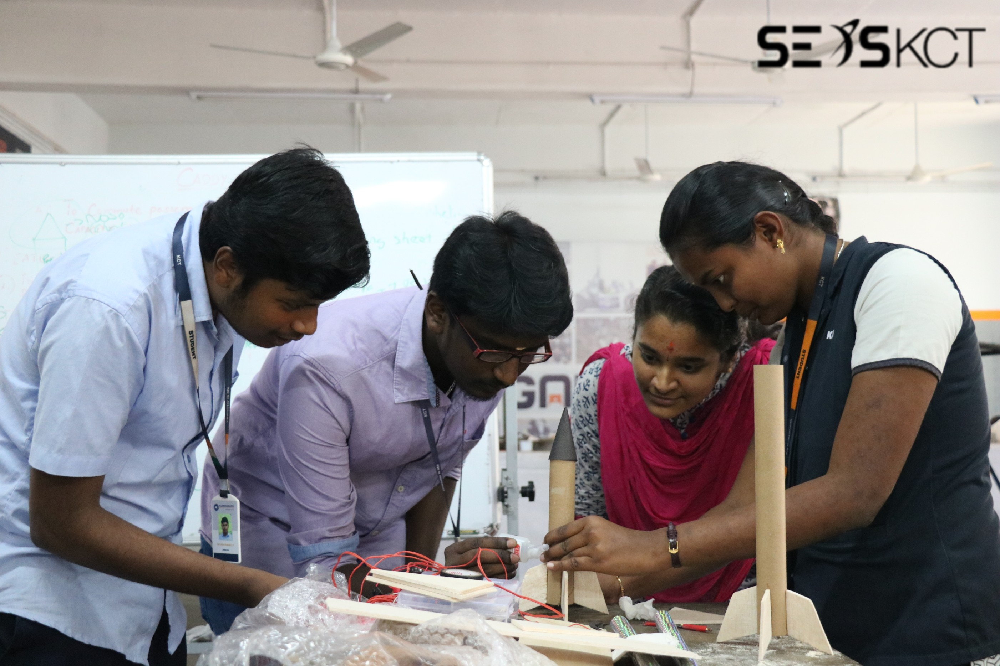

Projects
SEDS-VIT
SUAS

Student Unmanned Aerial Systems - An aerial system is to be built, capable of fully autonomous flight and navigation,
payload dropping, obstacle avoidance and various other tasks.
- So far the team has managed to run codes on the UGV(unmanned ground vehicle) to maneuver autonomously and communicate with the ground station.
- Final design, electrical and mechanical components' specifications and flight time calculations and predictions have been done.
- The short term goal is to achieve manual flight and practically measurethe flight time and weight lifting capacity of the drone.
- So far the team has managed to run codes on the UGV(unmanned ground vehicle) to maneuver autonomously and communicate with the ground station.
- Final design, electrical and mechanical components' specifications and flight time calculations and predictions have been done.
- The short term goal is to achieve manual flight and practically measurethe flight time and weight lifting capacity of the drone.
URC

University Rover Challenge - The aim is to build a Martian rover prototype that can carry out some tasks on a Martian terrain which is only remotely operated.
- The team has completed the design phase which includes the mechanical design, the software architecture design, electrical architecture etc.
- The team will now begin the manufacturing and assembling phase where it will start to implement the plans made for the University Rover Challenge.
- The team has completed the design phase which includes the mechanical design, the software architecture design, electrical architecture etc.
- The team will now begin the manufacturing and assembling phase where it will start to implement the plans made for the University Rover Challenge.
ERC

European Rover Challenge - The goal of the project is to construct a rover which can compete in tasks analogous to those performed by rovers on the surface of Mars and the Moon.
The team was successful in achieving the 19th rank in European Rover Challenge 2019 in the world.
The team was successful in achieving the 19th rank in European Rover Challenge 2019 in the world.
UAV

The aim of this project is to build an autonomous Unmanned Aerial Vehicle (UAV) to assist people during disasters by:
- Delivering a first aid kit containing Aspirin, inhaler for asthma patients, non-perishable food items (crackers), antiseptic cream, antibiotic tablets, gauze, cotton, rubbing alcohol, burn ointment and band-aids
- Surveying the affected area and,
- Locating victims with the help of face detection and object tracking.
- Delivering a first aid kit containing Aspirin, inhaler for asthma patients, non-perishable food items (crackers), antiseptic cream, antibiotic tablets, gauze, cotton, rubbing alcohol, burn ointment and band-aids
- Surveying the affected area and,
- Locating victims with the help of face detection and object tracking.
IARRC

Team Hydra, a subdivision of SEDS-VIT Projects Team is participating in the IARRC (International Autonomous Robot Racing Challenge). The competition provides students with real-world, hands-on engineering design challenges, including components of mechanical, computer, control software, and system integration.
The aim of this project is to build a small semi-rugged outdoor vehicle which will be able to carry a payload of at least 10kg. All of the car controls should be completely autonomous.
The aim of this project is to build a small semi-rugged outdoor vehicle which will be able to carry a payload of at least 10kg. All of the car controls should be completely autonomous.
Self-Balancing Bot

Self-balancing bot, as the name suggests is a robot that balances itself on two wheels. It uses the MPU6050 sensor to measure the tilt. The Arduino processes the readings from the sensors using the PID algorithm and accordingly forces the motors to change the direction to balance the bot in a vertical position.
Gesture Bot

This robot moves on the basis of input translated from hand gestures (tilt of hand) made by the person controlling it. It can move in all four directions and is wireless. It uses an RF module to communicate between the transmitter on the glove and receiver on the bot. It also has PWM, the more the hand is tilted in a direction the more is the speed of the robot.
Gravity Light

Gravity Light is a device that uses the potential energy of a mass 'm' at a height that is made to fall. The basic principle here is the conservation of energy, and its transformation from one form to another. During the fall, the potential energy is converted into electrical energy using a system of pulleys and a generator. This is used to light up an LED lamp to give light. This device can be used to replace fuel lamps in third world countries and provide a sustainable source of energy to millions.
Quadcopter - FRS Security System

It is a security drone made to monitor the security of your surroundings with the help of Face Recognition Sofware (FRS). The components required are Frame Motor x4, Electronic Speed Control (ESC) x4, Flight Control Board, Radio transmitter and receiver, Propeller x4 (2 clockwise and 2 counter-clockwise), Battery and Charger.
Tic-Tac-Toe

An app based game (tic tac toe) developed for android smartphones using Photoshop and Android Studio.
SEDS-CELESTIA (BITS-GOA)
Pyroboard

The aim of the project was to design a Rubens Tube. The SEDS-CELESTIA Projects team are in the process of making the first prototype for the same.
Star Tracker
StarTracker is a telescope mount which will track and display, the object aimed by the telescope on Stellarium in real time.
The team has successfully completed the second prototype.
The team has successfully completed the second prototype.
SEDS-REC
Quadrone

Quadrone is a quadcopter controlled using an RF Transmitter and is installed with a mini FPV Camera with a Video Transmitter and Antenna. The Operating Range is of 450 m and is primarily used for Area Surveillance Applications.
The project is completed and the test verification is pending.
The project is completed and the test verification is pending.
Extremity Rover

The team designed a Rocker bogie chassis made using PVC Pipes. The rover is controlled via Bluetooth using an Arduino Nano and is capable of treading through rough terrains.
The project is completed and all test verifications are done.
The project is completed and all test verifications are done.
SEDS-BITSH
Thrust Vector System

Vector control is employed in commercial spacecrafts and it is not only used for adjusting the heading but is also used for landing (like SpaceX and Blue Origin). The team hopes to test out low power model rockets and implement this vectoring system to try to land them back.
Initial calculations and the 3D printing of the thrust vector mount have been completed. The subsequent testing is on hold.
SEDS-KCT
Sounding Rocketry

The aim of the project was to design and launch a two stage Rocket with controlled projectile and a recovery system.
The team designed a propeller for a single stage Rocket having sugar candy propellant.